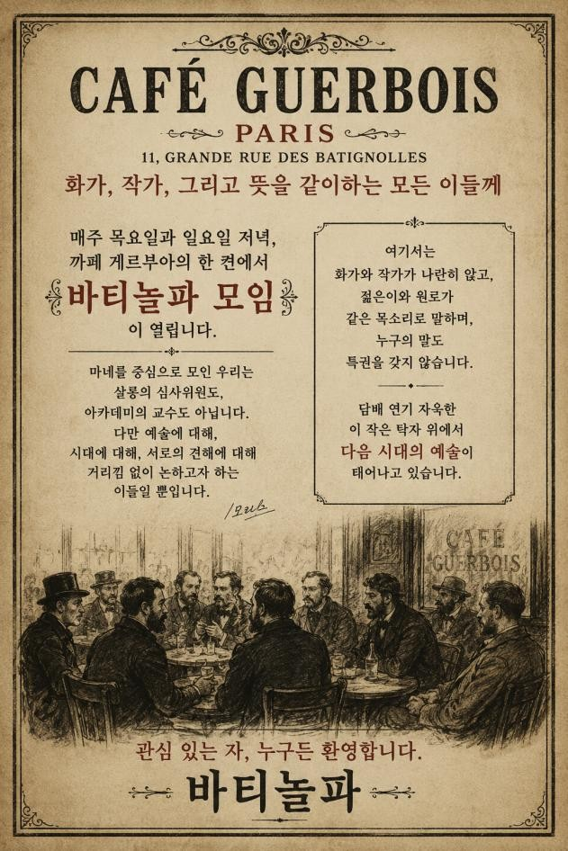

카메라 준비 중
Step 1
모리스칼럼 광고탑 스캔
앱 카메라로 모리스 칼럼 인식 시 전단지 회전 효과 활성화
카메라로 스캔하기
데모로 진행
다음 · 전단지 선택
데모로 진행
광고탑에 부착된 전단지 중 활성화된 전단지를 터치해 선택하세요.
데모로 진행

선택한 전단지
모임과 시대적 배경 보기
삽화 애니메이션 보기
당시 예술가들의 모임
시대적 배경
시대적 배경 원고 미정
닫기
다시 보기
체험 완료